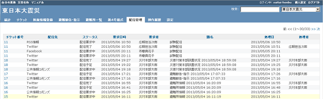
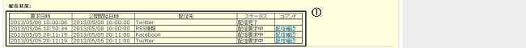
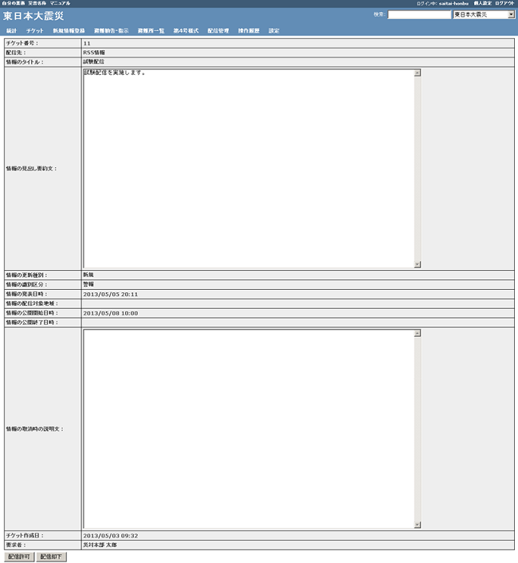

ログインし、タブメニュー「配信管理」をクリックします。
「ステータス」が「配信要求中」の「チケット番号」をクリックします。
・配信要求中：承認待ちの情報です。承認処理を行う必要があります。
・配信予定 ：承認が完了し、配信待ちの情報です。配信前であれば、配信取消を行うことができます。
・配信取消 ：配信要求後に、配信要求者により配信要求が取り消された、または、配信管理者により却下処理がされた情報です。
・配信中 ：配信処理中の情報です。
・配信失敗 ：配信時に、エラー等により、配信が行えなかった情報です。

配信要求中のチケット詳細画面が表示され、①「コマンド」に表示されている「配信確認」をクリックします。

配信許可、配信却下、配信取消を行います。下部のボタン表示は、配信ステータスにより、下表のボタンが表示されます。
| ステータス
|
表示ボタン
|
クリック時の動作
|
| 配信要求中
|
配信許可
|
配信要求を許可します。許可された情報の配信ステータスは、配信予定または、配信中になります。
|
| 配信却下
|
配信要求を却下します。却下された情報の配信ステータスは、配信取消になります。
|
| 配信予定
|
戻る
|
前の画面に戻ります。
|
| 配信取消
|
配信予定を取り消します。取り消しを行った情報の配信ステータスは、配信取消になります。
|
